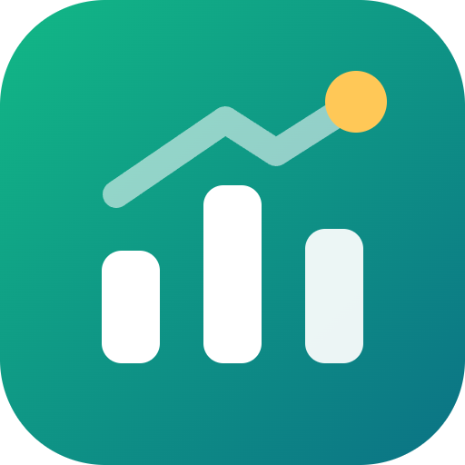

Quanto hai speso.
Quanto ti resta.
BalanceFede è un'app gratuita per Windows per annotare entrate e spese, organizzarle per categoria e tenere sotto controllo i budget del mese.
Scarica per WindowsSpese in pochi secondi
Importo, categoria e data: il resto (pagamento, etichette, note) è facoltativo. Ctrl+N da qualsiasi schermata.
Budget mensili
Totale e per categoria, con quanto hai speso, quanto resta e avvisi al 75%, 90% o 100%. Riporto facoltativo di quello che avanza.
Riepilogo del mese
Entrate, spese, saldo e confronto con il mese prima. Grafico per categoria e andamento mese per mese.
Categorie e cartelle
Categorie e sottocategorie modificabili; cartelle per i progetti come "Vacanze" o "Trasloco", senza perdere la categoria.
Ricorrenze e obiettivi
Affitto, abbonamenti e stipendio si registrano da soli. Obiettivi di risparmio con i progressi.
Ricerca e CSV
Filtri per periodo, categoria, importo, metodo di pagamento. Esporta in CSV per Excel o importa con anteprima e controllo dei doppioni.
I tuoi dati
- Restano solo sul tuo computer, in
%APPDATA%\BalanceFede, separati per ogni account. Nessun server e nessuna sincronizzazione online. - Dall'account Google o Discord BalanceFede riceve solo nome, email (Google) e immagine del profilo, per riconoscerti. Nient'altro.
- Nessun collegamento alla banca o ai tuoi conti: i movimenti li inserisci tu o li importi da un CSV.
- Dalle Impostazioni puoi esportare tutto in CSV o cancellare tutti i dati.
- BalanceFede è uno strumento per annotare e pianificare: non dà consigli finanziari.
Per il resto vale l'informativa sulla privacy di NoteFede, che usa lo stesso accesso.